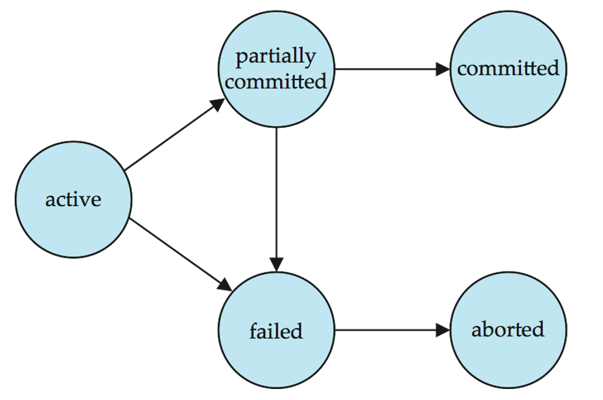

数据库系统
约 17797 个字 69 行代码 42 张图片 预计阅读时间 60 分钟
Abstract
课程信息 - 黄忠东老师授课。
-
参考用书：《Database System Concept》, 7th Edition
-
Grading Policy
这门课讲什么
在这门课程中，我们将学习到有严格事务要求(data access requirement)的结构化数据(data type)的管理。
特别鸣谢🙇
Relational Model¶
我们来看一个例子：

在这个例子中，蓝底的列名被称为attributes(属性)，下面的每一行被称为一个tuple(元组)。我们给定 \(A_1, A_2, …, A_n\) 是一系列 attributes ，那么
被称为relation schema。一般地，我们用 \(R\) 等大写字母表记一个 relation schema ，用 \(r\) 等小写字母表记一个 relation instance。
每一列的所有可取值(取值范围)被称为它的domain。我们给定列 \(A_i\) 的 domain 是 \(D_i\) ，那么从形式上说，一个关系(relation)就是 \(D_1 \times D_2 \times ... \times D_n\) 的一个子集。
换句话说，一个 relation instance 就是一张表格，每一行代表一个事物，每一列代表一项属性。
一个数据库(Database)就是由多个 relation 组成的。这一点在后续 SQL 部分还会有所体现。
我们定义一个概念：键(key)，并规定键 \(K \subseteq R~\mbox{(Relation Schema)}\)，键实际上就是一个列名。
-
\(K\) is a superkey(超键) of \(R\) if values for \(K\) are sufficient to identify a unique tuple of each possible relation \(r\).
-
Superkey \(K\) is a candidate key(候选键) if the number of attributes in \(K\) is minimal (If we remove one more attribute in \(K\), \(K\) will not be a superkey).
Note that Candidate key can have more than one attribute.
-
One of the candidate keys is selected to be the primary key(主键).
-
Foreign key(外键) constraint: Value in one relation must appear in another.
Assume there exists relations \(r\) and \(s\): \(r(A,B,C)\), \(s(B,D)\), we can say that attribute \(B\) in relation \(r\) is foreign key referencing \(s\), and \(r\) is a referencing relation, and \(s\) is a referenced relation.
referencing relation 是“引用”，其表述的是外键所在的 relation ； referenced relation 是“被引用”，其表述的是被引用的键所在的 relation。
Relational Algebra¶
需要注意：
- 关系代数的输入和输出都是 relations。
基础操作¶
| 操作 | 表达式 | 含义 |
|---|---|---|
| 选择 | \(\sigma_{p}{(r)}\) | 单关系操作。返回关系 \(r\) 中满足关系式 \(p\) 的元组的关系 |
| 投影 | \(\Pi_{~A_1,A_2,...,A_3~}{(r)}\) | 单关系操作。返回关系 \(r\) 中属性为 \(A_1, A_2, ..., A_n\) 的列并去重 |
| 重命名 | \(\rho_{x}{(E)}\) | 单关系操作。将 \(E\) 重命名为 \(x\) 并返回 |
| 集合并 | \(r \cup s\) | 将两个属性数相等且所有属性的域相同的两个关系合并为同一个关系，并去重 |
| 集合差 | \(r - s\) | 返回属于关系 \(r\) 却不出现在关系 \(s\) 中的元组的关系 |
| 笛卡尔积 | \(r \times s\) | 返回任意两个关系的元组组合 (两个关系的属性应不相交，否则应重命名) |
进阶操作¶
| 操作 | 表达式 | 含义 |
|---|---|---|
| 集合交 | \(r \cap s\) | 取同时出现在两个关系中的元组，可转化为 \(r - (r - s)\) |
| 自然连接 | \(r \bowtie s\) | 取两个关系公共属性中具有相同属性值的元组进行拼接 |
| \(\theta\) 连接 | \(r \bowtie_{\theta} s\) | 返回满足关系式 |
| 除 | $r \div s $ | \(r \div s = \Pi_{R-S}(r) - \Pi_{R-S}\big( (\Pi_{R-S}(r) \times s - r \big)\)，找出与“除数”关系中所有元组都有联系(能连接)的元组。\(R-S\) 代表 \( r \) 和 \( s \) 的属性集差。 |
| 赋值 | \(r \leftarrow E\) | 将右边的计算结果赋值给左边的表 |
聚集 |
\(_{G_1, G_2, ..., G_n}~\mathcal{G}_{F_1(A_1), F_2(A_2), ..., F_n(A_n)}{r}\) |
\(G_i\) 是用于分组的属性 (可为空) ，\(F_i\) 是聚集函数 (反映在数据库中就是sum/avg等函数) ，\(A_i\) 是属性名。聚集操作对一组值执行计算并返回单个值，它对数据集合进行"纵向"计算 (跨多行计算)。假设已经指定用于分组的属性，则按指定属性将关系划分为多个组，对每个组独立应用聚合函数，每组产生一个结果元组 |
SQL¶
这个章节对应教材第 3-5 章。
SQL 全称结构化查询语言(Structured Query Language)。SQL 数据定义语言(DDL)允许定义以下关系信息：
-
每个关系的模式(schema)
-
各属性关联的值类型
-
完整性约束
-
为每个关系维护的索引集合
-
关系的安全性与授权信息
-
关系在磁盘上的物理存储结构
SQL 的历史发展¶
这里应该不考，暂时鸽了(
SQL 数据类型¶
含义：定长为 n 的字符串
含义：长度可变的字符串，最大长度为 n
含义：长度可变的字符串，最大长度为 n
含义：整数。其数据范围是数学上的“整数”的一个由库和计算机架构决定的有限子集
含义：小整数。其数据范围是数学上的“整数”的一个由库和计算机架构决定的有限子集，只不过比 int 所包含的范围小。
含义：十进制表示，总共有 p 位，其中小数点后有 d 位。
例如对 numeric(3, 1)， 10.5、01.0 是合法的， 1.05、105、1 都是不合法的。
含义：至少有 n 个数字的浮点数。
含义：单精度浮点数和双精度浮点数。和 C 语言等的float/double大致对应。允许的数据范围由库和计算机架构决定。
SQL 还有一些关于时间的预设类型：
含义：日期，能且仅能包含(四位数字的)年份、月份和日期。
例如"2025-6-9"、"2025-06-09"
含义：时间，最大单位是小时，至少包含小时、分钟、秒。
"18:12:20" 和 "18:12:20.111" 都是可接受的输入。虽然标准格式要求小时、分钟、秒都应该是 2 位数字，但大多数数据库系统在输入时允许省略前导 0。
含义：从组成上看就是 date+time。
例如"2005-7-27 09:00:30.75"。
含义：描述一个时间段。interval 值可以被加在 date/time/timestamp 值上。
SQL 还有针对大型数据的表示方式。
含义：二进制大对象，是一个可以存储二进制文件的容器。典型的 blob 是一张图片或者声音文件等。对其的解析会交给外部程序去运行，数据库只负责存储这些大对象。
含义：字符大对象，是一个可以储存大段字符数据的容器。
Note
需要注意的是，当一个查询操作需要查询一个大对象时，会返回给它一个指向这个对象的指针而非这个大对象本身。传指针可快多了！
SQL 还允许用户自定义类型(create type)。
SQL 语句规范¶
这里就不列出所有语法了，仅仅放一些个人觉得可能会错的地方。
SQL 所有的关键字都是大小写不敏感的。
一个例子：
create table student (
ID varchar(5),
name varchar(20) not null,
dept_name varchar(20),
tot_cred numeric(3,0),
primary key (ID), -- 声明为primary key的属性会自动确保其非空
foreign key (dept_name) references department
-- references关键字后应该跟一个关系(table)名
);
完整性约束(Integrity Constraint)
完整性约束即对 attribute 内容的约束，不满足约束条件的 tuple 不能被插入。一般有 5 类约束方法：
-
not NULL：限定该属性值非 NULL。 -
primary key：声明为 primary key 的属性会自动确保其非空 -
foreign key：某个表中被声明为外键的属性一定是另外某个表的主键。 -
check(<predicate>)：自定义检查的条件，例如CHECK (semester in ("spring", "autumn")) -
自定义 domain ：例如
create domain person_name char(20) not null。此操作在 SQL92 标准被引入，允许用户自定义一个 domain。其本质上是一种可重用的约束模板。其基本语法是：然后你就可以使用这个值域了。例如：
它是基于现有类型的一种约束扩展，这一点和直接自定义类型(可以是完全独立的全新类型)有所不同。
一个典型的查询语句具有如下形式：
select 可以细分为 select all 与 select distinct ，区别是是否为结果去重， select 不使用后缀时默认为 select all。select distinct 与关系代数的 \(\Pi\) 等价，而 select all 则不然。
事实上，上述语句等价于关系代数表达式：
这里使用 \(\Pi\) 会产生重复行的原因是，当关系中的两个元组各属性值完全相同时，\(\Pi\) 才会去重，像这样先笛卡尔积后，虽然选定的属性值有重复，但是每个元组都不完全一样。
需要注意的是，查询操作返回一个关系(table)。
非典型的用法
select 选择的内容也可以是表达式，例如select salary/1000 from teacher;返回的是 salary/1000 的结果。
也因此 select 可以没有 from 子句，一般用于展示数据或者赋值并展示结果，例如select 12345/5;单纯打印这个表达式的结果数字。
select 结果可以使用order by ATTRIBUTE_NAME (desc/asc)子句排序， desc/asc 表示按照降/升序，不显式指定默认为 asc。order by 后面可以跟多个 attribute ，以逗号分隔，靠前的优先。
like 是模糊搜索的关键字。SQL 字符串查找最常用的两个记号为%和_。%匹配任意字符串，_匹配任意单字符。
需要字符串查找内容本身包含%或_时使用逃逸字符\%、\_。字符串内容匹配默认区分大小写。

它们三者各自都又有 all 和 distinct 两个版本，区别是结果是否去重，但是它们默认去重，这与 select 不同。
union/intersect/except分别等价于交集、并集、集合的减法。
配合各类代数操作，功能等价于关系代数中 \(\mathcal{G}\) 前部的下标。
group by先于 select 进行，创建一个仅包含代数操作列与 group by 列的临时表， select 操作在这个临时表中进行。
-
where 在 group by 之前进行，不满足条件的 tuble 不会参与 group by 进入临时表。
-
having 在 group by 之后进行，在产生的临时表中筛选，只返回满足的 tuble。
因此引申出 exists 只能跟 where ；代数操作做条件只能跟 having ；同样的语句在 where 和 having 之后效果不一定相同。下面是一个正确用法示例：

NULL 值不参与对列的代数函数运算，全 NULL 的 tuple 不会被 count()计数。没有非 NULL 元素时，代数操作返回 NULL ， count()返回 0。
some/all 跟在关系符号( \(<\)/\(>\)/\(\leq\)/\(\geq\)/\(=\)/\(\neq\) )后， some 相当于于存在， all 相当于任意。当其后的表中元素满足前面的关系则返回 true。
5 < some{[0], [5], [6]} = true
5 < some{[0], [5]} = false
5 = some{[0], [5]} = true
5 != some{[0], [5], [6]} = true
-- (=some) = in 但是 ( != some) != not in
5 < all{[0], [5], [6]} = false
5 = all{[0], [5], [6]} = false
5 > all{[0], [4]} = true
5 != all{[0], [4]} = true
-- ( != all) = not in 但是 (=all) != in
Join 语句的基本功能是将两张表中的 tuple 按一定规则进行匹配，将他们相同的列保留其一，不同的列全部保留，合成一个大 tuple。
-
Join Conditions ：控制哪一些列或条件用于匹配两张表中的 tuple
-
natural ： tuple 所有同名列的值相等(默认)
-
using (A1, A2...)： tuple 同名列中指定的部分列的值相等
-
on
：按照特定的规则匹配，不限于同名列
-
-
Join Types ：控制如何处理没有匹配对象的 tuple
-
Inner Join ：没有匹配对象则不返回(默认)
-
Left Outer Join ：左侧表的 tuple 没有匹配对象，则为扩展的列填入 NULL ，一起返回
-
Right Outer Join ：右侧表的 tuple 没有匹配对象，则为扩展的列填入 NULL ，一起返回
-
Full Outer Join ：上面二者的并集
-
建立一个作用域为一条语句的临时的表用于简化逻辑表达式增加可读性。相当于关系代数中的赋值操作。
view 一般用于查找以及接口，语法和 with 相同，作用也基本相同。唯一的区别是 view 一经定义则一直可用，而 with 的作用域仅有单条语句。
view的特性
-
view 并不是实际存在的表，每次调用 view 时只是重复调用了筛选的条件。因此 update table 后，与之关联的 view 也会改变。
-
我们一般不对 view 进行 update。大部分 SQL 系统对 update view 有严格的限制。

-
部分 SQL 也支持 materialize view ， view 此时是一张真实存在的表，这一般是为了用空间换时间。物化视图相关的表发生变化时，它自己也必须同时更新，以维持一般 view 的特性。
CREATE INDEX index_name ON table_name ( column1, column2.....); -- 创建
ALTER TABLE table_name DROP INDEX index_name; -- 删除
但索引并不是尽善尽美，例如 update 之后，索引需要同步维护；同时索引是一种物理结构，有额外的空间与 IO 开销。不适当的索引设置反而会降低效率。
授予/收回权限的基本语法是：
grant <priviledge list or role name>
on <relation_name or view_name> to <user list>; -- 授予
revoke <priviledge list or role name>
on <relation_name or view_name> to <user list>; -- 收回
需要注意：
-
权限可以来自多个上级用户，相互可以重叠，例如有两者都为第三方授予了读取权限，此时即使有一方撤回了权限，第三方仍然可以正常读取。
-
权限可以级联下放，例如 A 为 B 授予了某些权限， B 可以继续向其他人授予不高于他自己的权限。当 A 撤回对 B 的权限时， B 下放给他人的权限也会同时被收回。
-
权限的基本单位是 relation ，需要授予某个数据库内所有 relation 的权限时可以使用
DB_name.*。
有多个同类用户需要做统一的权限调整时，列出
高级 SQL¶
在高级编程语言中使用 SQL¶
嵌入式 SQL(Embedded SQL)
SQL 标准定义了如何将 SQL 嵌入到多种编程语言中，例如 C、Java 和 Cobol。
一种用来嵌入 SQL 查询的语言被称为宿主语言 (host language)，而宿主语言中允许的 SQL 结构则构成了嵌入式 SQL (embedded SQL)。
这些语言的基本形式遵循了 System R 将 SQL 嵌入到 PL/I 的模式:
嵌入式 SQL 需要解决的问题有：
- 在宿主语言和 SQL 语句之间交换参数和结果。
- 处理集合(sets)与变量(variables)之间的差异。
- 获取 SQL 语句的执行状态。
- 将代码编译成宿主语言。
(1) 预处理器机制
-
输入：混合了宿主语言代码和特殊标记的 SQL 语句(通过
EXEC SQL界定)。 -
输出：
-
纯宿主语言代码(替换 SQL 为 PL/I 的数据库调用，如 SQLFetch)。
-
自动生成的通信区(如 SQLCA)用于传递执行状态(如错误码)。
-
具体形式因语言而异(例如， Java 的嵌入式 SQL 使用 #SQL { ... };)。
(2) 宿主变量(Host Variables)
-
作用：在 PL/I 和 SQL 间传递数据。
-
语法：宿主语言变量前加冒号(如
:credit_amount)，预处理器自动生成类型转换代码。 -
限制：需显式声明类型匹配(如 PL/I 的 FIXED BINARY(31) 对应 SQL 的 INTEGER)。
(3) 游标(cursor)
我们知道， SQL 的查询操作返回一个元组集合，即多行数据，但是宿主语言往往只能一行一行地处理数据。所以我们需要一个东西来暂存返回的结果。我们在嵌入式 SQL 里就可以声明一个游标：
这样，在数据库端创建一个临时工作区，存储查询结果(避免一次性传输大量数据到客户端)。同时，通过游标位置，宿主语言也可以逐行访问结果。
操作流程：
-
OPEN cur：执行查询，创建临时结果集； -
FETCH cur INTO :id, :name：获取单行数据到宿主变量。如果需要连续获取需要考虑循环； -
CLOSE cur：关闭查询，释放资源。
错误检查：
SQLCA(SQL Communication Area)：
-
包含 SQLSTATE(如 '02000' 表示无更多数据)。
-
宿主语言通过检查 SQLCA 判断 SQL 执行状态。
示例：学生学分查询(通过游标逐行处理结果)。
void getStudentInfo()
{
int credit_amount;
char sId[16];
char sName[16];
EXEC SQL declare c cursor select id, name from student where tot_cred> :credit_amount END EXEC;
printf("Please input the credit amount: ");
scanf("%d",&credit_amount);
EXEC SQL open c END_EXEC;
while (1)
{
EXEC SQL fetch c into :sId, :sName END_EXEC;
if (!strcmp(SQLSTATE,"02000")) // 02000状态码表示表中已经没有数据
break;
printf("%s %s\n",sId,sName);
}
EXEC SQL close c END_EXEC;
}
ODBC 与 JDBC
它们都是实现程序与数据库交互的 API(application-program interface)。
ODBC是 C/C#/C++/VB 的通用 API ，通过驱动管理器连接数据库(配置 DSN)。
核心函数：SQLConnect(), SQLExecDirect(), SQLFetch()。
安全风险： SQL 注入(需用预编译语句 SQLPrepare)。
过程化扩展¶
触发器(Trigger)¶
高级聚合与 OLAP¶
Warning
好像不考，我就不写了(
数据库设计范式¶
E-R 模型¶
模型概念¶
-
实体(entity)：在现实世界中能够与其他对象区分开来的一个对象．
一个实体会有一组属性(attribute)，我们可以用某些属性的值来识别唯一的实体．
实体可以是具体的，也可以是抽象的．
-
实体集(entity set)：相同类型（共享相同的属性）的一组实体构成了一个实体集．
ER 图中实体集的表示：用矩形表示实体集．矩形被分为两部分，上半部分是实体集的名字，下半部分包含了所有属性的名称，其中作为主键的属性用下划线表示．
联系(relationship)是多个（两个及以上）实体的关联．
联系集(relationship set)：一组相同类型的关系．
- 大多数关系集都是二元的，但有时也存在三元甚至包含更多实体集的关系．我们称参与到某个关系集的实体集个数为该关系集的**度(degree)**．
- 联系集的形式化定义：设 $n$ 个可重复的实体集分别为 $E_1, E_2, ..., E_n$，在他们之上定义的联系集是一个关系(relation)，且应该是 $\{ (e_1, e_2, ..., e_n) \mid e_1 \in E_1, e_2 \in E_2, ..., e_n \in E_n \}$ 的子集。$(e_1, e_2, ..., e_n)$ 称为联系的一个实例。
- 一组特性的实体集之间可能会包含多个联系集。
ER 图中关系集的表示：用菱形(diamond)表示关系集，并从这个菱形出发，通过 直线(line) 连接到参与该关系集的实体集．
<div align="center">
<img src="../images/DB/db42.png" alt="perform_2" style="zoom: 80%"/>
</div>


存储¶
存储层级¶

上图中的是否易失是根据掉电后数据会不会丢失区分的。
磁盘存储接口¶
存储设备通常直接连接到计算机系统上，因此往往需要一个接口。目前一些主流的存储设备协议家族有：
-
SATA
最近的 SATA 3 理论带宽可以达到 6Gbps。
-
SAS
第三代 SAS 理论带宽可达 12Gbps ，第四代的理论带宽可达 22.5Gbps。
-
NVMe
是一种直接运行在 PCIe 总线上的高效协议。它通过 PCIe 接口访问非易失性数据，延迟更小，传输速度更快。 NVMe 2.0 采用 PCIe 5.0 x4 接口，理论带宽可达约 16GB/s。
我们也时不时需要在网络上存储数据。SAN 和 NAS 就是两种主流的网络存储架构。
-
SAN(Storage Area Networks ，存储区域网络)
A large number of disks are connected by a high-speed network to a number of servers.
-
NAS(Network Attached Storage ，网络附加存储)
Networked storage provides a file system interface using networked file system protocol, instead of providing a disk system interface.
磁盘工作机制¶
下图展示一个机械硬盘的结构：

-
读写磁头 (Read-write head)
-
定位在盘片表面极近处(几乎接触)
-
通过磁编码方式读取/写入信息
技术说明：现代硬盘采用气浮技术保持 3-10 纳米间距，称为"飞行高度"(Flying Height)
-
-
盘片表面划分
-
由同心圆状的磁道(Track)组成
-
典型硬盘每盘片含 50,000-100,000 条磁道
注：磁道密度随技术发展提升， HAMR(热辅助磁记录)技术可达 200k+TPI(每英寸磁道数)
-
-
磁道结构
-
每条磁道划分为扇区(Sector)
-
扇区是物理读写的最小数据单元
-
典型扇区大小： 512 字节(现代高级格式盘为 4K)
-
每磁道扇区数：
内圈磁道： 500-1000 个
外圈磁道： 1000-2000 个
技术演进： ZBR(区位记录)技术使外圈磁道存储更多扇区
-
-
扇区访问机制
-
磁臂摆动使磁头定位到目标磁道
-
盘片持续旋转，当扇区经过磁头下方时完成读写
延迟组成：寻道时间(Seek Time) + 旋转延迟(Rotational Latency)
-
-
磁头-盘片组件(Head-Disk Assembly, HDA)
-
单个主轴安装多层盘片(通常 1-5 片)
-
每个盘面对应一个磁头，所有磁头安装在同一磁臂上
关键参数：面密度(Areal Density) = 磁道密度 × 线性密度
-
-
柱面(Cylinder)
- 由所有盘片的第 \(i\) 号磁道组成柱面 \(i\)
优化原理：同一柱面数据无需移动磁臂即可连续访问
有了主机系统和存储设备，我们还需要一个主机系统与物理存储设备之间的桥梁来实现管理和优化数据存取。磁盘管理器(Disk Controller)就担当了这一角色。
磁盘管理器：
-
接收高层读写扇区指令 (解析来自操作系统的读/写扇区命令)
-
启动磁盘操作：例如驱动磁头移动到指定磁道、执行物理层面的数据读写操作等
-
数据校验管理：为每个扇区计算并附加校验和(checksums) (如 CRC32/ECC)，读取时通过校验和验证数据完整性
- 错误检测机制：当数据损坏时，存储的校验和与重新计算值不匹配的概率极高
-
写入验证：采用“写后读”(Read-After-Write)技术确保写入成功
-
坏扇区处理：执行坏扇区重映射 (remapping of bad sectors ，通过备用扇区替换损坏区域)
磁盘性能评估¶
磁盘性能一般从以下维度评价：
-
Access time 访问时间
对 HDD 又可以细分为 Seek time 寻道时间 和 Rotation latency 旋转延迟。
-
Data-transfer rate 数据传输速率
-
IOPS 每秒 I/O 操作数
-
Mean time of failure(MTTF) 平均故障时间
根据所访问数据的储存位置，可以将访问分为随机访问 (Random access)和顺序访问 (Sequential access)。顺序访问的上限主要由传输速率决定；随机访问的上限主要由 IOPS 决定， IOPS 又主要由访问时间决定。
优化磁盘性能的常见方式主要有：
-
Buffering 缓冲区，避免重复读写相同数据
-
Read-ahead 预读取
-
Disk-arm-scheduling ：针对 HDD ，相比让磁头来回摇摆，适当重排 IO 请求使磁头有序移动能减少平均寻道时间
电梯算法
-
File Organization ：针对 HDD ，文件整理，使数据分布尽可能有序
-
Wear Leveling ：针对 NVM 和 SSD ，因为擦写寿命相对有限，需要实现负载均衡
闪存 Flash Storage¶
数据存储结构¶
从物理存储的层面上看，一个数据库由多个文件(files)组成，每个文件是记录(records)的有序序列，每条记录是字段(fields)的有序序列。
由于扇区的空间比较小且数目众多，在寻址时比较困难，所以操作系统就将多个扇区组合在一起，形成一个更大的单位，再对这个单位进行整体的操作。一般将这个单位称作块(blocks)。也就是说，操作系统是通过块来做为单位读取等操作数据的。而文件系统就是操作系统的一部分，所以文件系统操作文件的最小单位是块。
我们下面的讨论假设每条记录的大小都不超过一个块。
单条记录¶
定长记录存储¶
按行存放 (Row-Oriented Storage) 的定长数据的增查改都容易实现：
-
Store record i starting from byte \(n * (i – 1)\), where \(n\) is the size of each record.
-
访问数据是简单的，但是一条记录可能跨块存储。于是我们做出限定：记录不允许跨越块的边界。
删除一般有两种方式：
-
删除后的空位用链表串联供下次插入用 (如图所示： link all free records on a free list)

-
删除后将最下面的一个数据移到删除后的空位
但是数据还可以按列存放，称为 Columnar Representation 或 Column-Oriented Storage 。增删查改的实现与上面类似；按列存放更有利于向量运算。如果按属性访问多于按 tuple 访问，这种储存方式会更快。
不定长记录存储¶
为什么会有变长记录
-
多记录类型共存：单文件存储不同结构记录(如 PostgreSQL 的 TOAST 机制)
-
变长字段： VARCHAR、TEXT、BLOB 等类型
-
重复字段：历史数据模型(如网状/层次模型)允许的多值属性
例如，存储 JSON 数组时可能产生变长记录
用 null-bit map 解决允许为 NULL 的数据储存。n 个允许为空的属性需要 n 个 bit 的空位图，空位图中某一 bit 为 0/1 意味着对应的属性不是/是空的。
需要注意的是 memory 不允许以 bit 为单位的读写， n 不能被 8 整除时需要补齐到 8 的整倍数 (至少 1Byte) 以实现 Byte 为单位的读写。
属性按照顺序存储。对于不定长的属性值，用定长的数据 \(\mbox{(offset, length)}\) 间接表达，例如图中(21, 5)表示该属性从 21 号 Byte 开始且长度为 5。 在定长的属性值存储完后再存储不定长属性值的本体。

槽式页(Slotted Page)¶
Slotted Page(槽式页) 是数据库系统中用于组织磁盘数据页的一种高效结构，特别适用于管理变长记录。
不定长数据的数据页一般采用两头夹击的结构便于对齐。
-
页头(Header)设计
-
记录条目数：维护当前页内有效记录数(如 PostgreSQL 的
pd_lowe) -
空闲空间尾指针：指向可用空间起始位置(如 MySQL 的
PAGE_FREE) -
记录位置/大小数组：每个槽位存储(offset, length)二元组
-
-
记录移动策略
数据页可以通过移动记录消除碎片，保持数据的连续性。
但是需要注意，所有的相关指针必须同步原子性更新，否则会破坏数据的一致性。
-
指针间接访问。外部指针指向页头中指向实际数据的指针(二级指针)。
graph LR
A[外部指针] --> B[槽数组条目]
B --> C[实际记录位置]文件记录组织¶
我们总需要一种方式组织单条数据和数据页，即它们如何分布在文件内部。下图是几种常见的结构：

堆(Heap)文件管理¶
堆文件的特性有：
-
记录自由放置：记录可以插入到文件中任何有空闲空间的位置
-
记录固定性：记录一旦写入通常不移动(除非主动重组)
-
关键需求：需要高效定位空闲空间
我们可以采用空闲空间映射表(Free-Space Map, FSM)来快速定位有足够空闲空间的块。
-
对于一级 FSM ，每个块对应一个条目(1 entry per block)。每一个条目都用数位(一般最多到一个字节)来记录对应块中空余空间的比例。
-
我们来看一个例子：
Example
在这个例子中，每个条目我们用 3 位，条目值除以 8 (\(2^3\)) 的值就是块中剩余空间的比例。
我们还可以采取二级 FSM 的方式加速大范围空闲块搜索。比如，对于这个示例，我们让每个二级条目对应 4 个一级条目，存储这 4 个块中的最大空闲比例。
-
FSM 会定期写入(非实时更新)磁盘，容忍暂时性不一致，这种暂时性的不一致会被检测并修复。通常采取的检测方式是，在实际分配时再次验证可用空间。
顺序(Sequential)文件管理¶
这里的 Sequential 不是指储存空间上有序，而是指每一条数据逻辑关系上有序。在数据经常按某种排序先后取用时，可以考虑顺序文件系统。先后逻辑一般用类似指针的结构实现。
-
删除：使用指针链。改变指针指向以改变逻辑先后关系。空余位置的处理视单条数据的结构而定。
-
插入：需要先定位记录在何处插入。有剩余空间可以直接插入。但是如果当前 block 满了，只能插入到新 block 中(overflow block)。但我们又需要维持逻辑先后关系，这时就会形成下图所示的结构(为便于理解这里以定长数据为例)。

因为存在上图所示问题，在多次插入和删除之后指针系统会变得很低效，因此顺序文件系统需要适时 Reorganize。
多表聚簇(Multitable Clustering)文件管理¶
这种技术将多个逻辑上关联的表的记录混合存储在同一个物理文件块中，以优化关联查询性能。从实现上看，它是将频繁参与连接操作(如JOIN)的表记录存储在同一物理页或相邻页中。下面就是一个例子：

这可以提高查找的速度，但也意味着成倍的空间和增删改成本。
优势：
✅ 关联查询性能提升
✅ 减少连接操作的 CPU 开销
✅ 提高缓存局部性(相关数据同处 CPU 缓存行)
局限：
❌ 非关联查询可能变慢(如全表扫描单表)
❌ 插入/更新开销增加(需维护共置关系)
❌ 设计复杂度高(需预知查询模式)
我们也可以利用指针连接起一些关系的记录：

Table Partitioning¶
一个关系里的有些记录可以被分成一些更小的记录分别储存。
例如选课信息表，虽然从逻辑上所有学年的选课信息都在同一张表上，但是因为往年的数据几乎不需要增删查改，数据操作集中于当前学年，所以按照学年物理划分为多个储存文件将有助于提高性能。
B+ Tree File Index¶
B+树不仅可以作为索引的结构，还可以直接作为文件组织的结构。在下一章“索引”中会进行介绍。
数据字典存储(Data Dictionary Storage)¶
上面的三类文件组织都是对库中的实例而言的，但是数据库还有一些框架性的全局的信息需要储存，我们称为Metadata。Data Dictionary(亦称system catalog)就用来存储这些信息。

其中一种实现方式是用事先约定的固定的几个表，储存用户定义的信息。在磁盘中，这些 metadata 可以用下面的关系图表示：

缓冲区/缓存¶
我们希望更快速地获取一些短时间内频繁使用的数据。缓冲区(Buffer)就是这样的角色。Buffer 是主内存中用于存储磁盘块副本的专用区域。而缓冲区管理器(Buffer Manager)就是负责动态分配和管理内存缓冲区的核心子系统。
程序进程需要缓冲区中的数据时，它们就会唤起缓冲区管理器。
若该块已在缓冲区中，缓冲区管理器返回其在主内存中的地址。
若该块不在缓冲区中，缓冲区管理器则：
-
在缓冲区内为该块分配空间
-
如有必要，置换(移出)其他块以腾出空间
- 仅当被置换块自上次磁盘读写后被修改过，才将其写回磁盘
-
将目标块从磁盘读入缓冲区，并向请求者返回其主内存地址
最常用的是 LRU 策略(Least Recently Used Stratergy)，即根据“最近访问过的内容更有可能再次被访问”的原则管理缓存内容。需要理解下图所示 buffer 的变化(实际上这部分内容计组也涉及过)：

其余缓存策略：

索引(Indexing)¶
索引机制旨在加速对目标数据的访问。我们生活中也会遇到索引，比如图书馆书目的索引。
一个索引文件(index file)由如下形式的记录(称为索引条目(index entries))
其中，search key(搜索键)是所有列中被选中用来查找记录的属性(列名)。这里的指针都指向各条记录。
有序索引和无序索引¶
有两种基本的索引方式：有序索引和无序索引。这里的“序”指的是 search key 的值有无顺序。
无序索引比较常见的是哈希索引(Hash indecies)，其原理就是通过哈希操作分布，而哈希操作想必大家在 FDS 课程中都已经有所了解。
顺序索引可以根据不同的排序规则分类成：
-
Primary Index (clustering index)
索引(搜索键)的顺序与物理储存的顺序对应。

Index-sequential file: ordered sequential file with a primary index.
-
Secondary Index (non-clustering index)
物理存储不按照搜索键存储。每个索引条目指向一个指针桶，这个指针桶指向相同搜索键值的所有数据。

二级索引必须是稠密(Dense)的。一个稠密索引中，一条索引必须对应一个搜索键值，每个搜索键值都要有相应的索引对应。稠密索引对文件是否是顺序的没有要求。

在上图中，文件并没有按照索引的搜索键dept_name存储，所以这是一个二级索引，同时是一个稠密索引。
与之对应的，稀疏索引(Sparse Index)指的是只有部分搜索键值有对应索引。

比如我们如果想找到搜索键值为 K 的记录：
-
找到比 K 小的搜索键值中最大的那个的索引
-
从索引指向的记录开始顺序查找
稀疏索引相较于稠密索引，其可以
-
显著减少索引体积；
-
维护成本低，增删操作时一般情况下只需要更新少量索引条目。例如：块内数据变动不触发索引更新，除非涉及块的边界键值。
但是，稀疏索引由于需要两步定位记录，所以整体上查询记录的效率不如稠密索引。
我们有一个较好的折中方案，按数据块建立稀疏索引：每个文件块(Block)在索引中对应一个条目，存储该块的最小搜索键值。
按照这个方案，我们可以继续嵌套下去，形成多级索引(Multilevel Index)。
B+树索引¶
有了前面的多级索引结构，我们或许能够联想到树的结构。于是，B+树索引作为一种顺序索引的替代出现了，并且广泛为大家所用！
索引顺序文件的缺点：
-
因溢出块(overflow block)增多，其性能会随着文件增大而下降
-
需定期重组整个文件
B+树索引文件的优点：
-
插入/删除时可自动小幅重组
-
多数情况下无需全文件重组即可维持性能
(次要)B+树的劣势：
-
额外的插入/删除开销
-
空间占用略高
但是， B+树优点远胜缺点，因而被广泛应用。下面是一个 B+树的例子：

B+树的结构¶
-
所有叶子节点深度相同。我们已经学过， n 阶高度为 h 的 B+ 树的叶子层最少有 \(2*(( \lceil n/2 \rceil )^{h-2}) * \lceil (n-1)/2 \rceil\) 个节点，最多 \((n^{h-1}) * (n-1)\) 个节点；
-
节点填充率：非叶子节点需满足至少有 \(\lceil n/2 \rceil\) 到 \(n\) 个子节点；
-
叶子节点通过指针链支持范围查询。
B+树索引的操作¶
-
查询：从根到叶的路径搜索(复杂度 \(O(\log_{\lceil n/2 \rceil}K)\) )
-
插入/删除：可能触发节点分裂/合并，向上传播
插入之前先进行排序，比乱序插入更新索引的代价小，尤其对于 B+树索引而言。对 B+树，批量插入还可以直接建叶节点，然后自叶向根更新而不是从顶而下插入。
B+树不仅可以作为记录的索引，还可以作为文件的结构，叶节点不是指针而是记录本身即可。
一个页中可以存放的索引大小应该是：
内存索引优化¶
对磁盘而言，与磁盘页大小相匹配的索引用起来更快；因为磁盘 IO 的最小单位是扇区。
而对memory 和 cache而言，节点大小小的用起来更快；因为随机访问性能高得多，也没有扇区大小限制。
高级索引¶
多键索引
复合搜索键都是按照字典序(Lexicographic order)来排列的。多键复合索引可以高效地支持多条件查询。
字典序
字典序是指: \((a_1, a_2) < (b_1, b_2)\) if either
-
\(a_1 < b_1\), or
-
\(a_1 = b_1\) and \(a_2 < b_2\)
假设我们有(dept_name, salary)作为复合搜索键。那么，我们可以有效处理：
-
where dept_name = "Finance" and salary = 80000 -
where dept_name = "Finance" and salary < 80000
而不能有效处理
-
where dept_name < "Finance" and balance = 80000这会导致许多在逻辑上满足第一个条件但是不满足第二个条件的行也被选中。
写入优化索引¶
-
LSM(Log Structured Merge)树
内存缓冲(L0) + 多层磁盘合并(L1, L2...)，多级树型索引分别放在不同层次的储存上
-
优点：写放大低(顺序 I/O)
保证了写入的速度(先往更快的 mem 写，攒够一定量后再一次性写入 disk)；减少了磁盘的写入量(因为磁盘 IO 的最小单位是扇区，单次大量写入对磁盘的消耗远小于多次少量写入)
-
缺点：读需查多级(要在多棵树里找)
如果每一层级允许同时存在多棵树，称为Setpped-merge index，这种做法进一步用编程难度、空间复杂度和查询速度换写速度。
-
-
缓存树(Buffer Tree)
可以替代 LSM 树。其核心点在于，每个内部节点都有缓冲去缓冲写入操作，之后批量下推。
-
每条记录的 I/O 操作相应减少；查询的开支也减少了。Buffer Tree 可以用于任何树结构的索引。
-
但是相对于 LSM 树增加了随机 I/O
-
Warning
课程 PPT 将 B 树索引、哈希索引等一概隐藏了，这里就不放了，感兴趣的朋友可以去看教材。
查询处理¶
基本的查询流程如下：
解析与翻译 -> 优化 -> 执行

衡量查询开销的主要指标有：磁盘访问时间、CPU 延迟、网络连接等等。一般来说，磁盘访问是主要的性能开销项，其成本也相对容易估算。这一项可以通过以下指标进行量化计算：
-
寻道(seek)次数 × 平均单次寻道成本
-
读取的磁盘块数 × 平均单块读取成本
-
写入的磁盘块数 × 平均单块写入成本
简化起见，我们本章只使用块传输次数(number of block transfers)和寻道次数(number of seeks)作为开销的衡量。
上式中，\(t_T\) 指单块传输时间，\(t_s\) 指单次寻道时间。这两个指标取决于数据在哪里存储。经验上看，假设一个块的大小为 4KB ：
-
High end magnetic disk: \(t_S\) = 4 ms and \(t_T\) = 0.1 ms
-
SSD: \(t_S\) = 20-90 \(\mu s\) and \(t_T\) = 2-10 \(\mu s\) for 4KB
选择(Selection)操作¶
针对选择操作(select)的算法主要有两类：直接对文件的线性(linear)扫描和使用索引的索引(index)扫描。
-
线性扫描(A1)
扫描每个文件块，并逐条测试记录，看其是否满足选择的条件。
- 用 \(b_r\) 描述存储了关系 \(r\) 记录的块的数量。假设文件连续存储，那么一次线性扫描就需要
\[ \mathrm{b_r \times t_T + 1 \times t_s} \]的时间。
-
如果选择是基于某个键的，找到目标记录后即可终止查询。此时，平均来看块传输的次数就会降到 \(b_r / 2\)。
-
线性搜索可适用于以下场景：
-
任意选择条件
-
文件记录无序存储
-
无索引可用
-
Tip
-
二分搜索通常不适用，因为数据物理存储不连续(除非存在索引)
-
二分搜索的寻道次数通常高于索引扫描
-
索引扫描
注意，在下面的讨论中，\(h_i\) 总是表示索引的层数。
-
等值查询
-
A2(主索引 + 基于主键的等值查询)
获得单条符合条件的记录。
\[ \mathrm{Cost = (h_i + 1) * (t_T + t_s)} \] -
A3(主索引 + 基于非主键的等值查询)
获得多条符合条件的记录。用 \(b\) 表示存有符合条件的记录的块的数量，
\[ \mathrm{Cost = h_i * (t_T + t_s) + t_s + t_T \times b} \] -
A4(二级索引 + 基于非主键的等值查询)
如果搜索键是候选键，那么可以得到单一的记录。
\[ \mathrm{Cost = (h_i + 1) * (t_T + t_s)} \]如果搜索键不是候选键，那么会得到多条记录。假如一共有 n 条符合要求的记录，这些记录可能分布在不同的块上，因而开销可能会变得很高：
\[ \mathrm{Cost = (h_i + n) * (t_T + t_s)} \]
-
-
比较条件查询
比较条件查询(\(\sigma_{A \leq V}(r)\) 或者 \(\sigma_{A \geq V}(r)\))可以使用前面的线性扫描完成，也可以使用下面的算法：
-
A5(主索引)，关系已经按照属性 A 排序
-
对于 \(\sigma_{A \geq V}(r)\)，我们用索引找到第一个满足 \(\geq V\) 关系的元组，然后从这里顺序扫描关系即可；
-
对于 \(\sigma_{A \leq V}(r)\)，我们甚至不需要索引，只需要从关系的开头顺序扫描，直到遇见第一个 \(> V\) 的元组即可。
-
-
A6(二级索引)
-
对于 \(\sigma_{A \geq V}(r)\)：
-
通过索引定位到首个 \(\geq V\) 的索引项
-
顺序扫描后续索引条目，获取指向数据记录的指针
-
-
对于 \(\sigma_{A \leq V}(r)\)：
直接扫描索引叶子页，获取指针直到出现首个 \(> V\) 的条目
-
上述两种算法：
-
共同操作：根据指针逐条读取对应数据记录
-
代价特性：每条记录需单独 I/O 操作
-
当满足条件的记录过多时，线性全表扫描可能更高效
推导
-
-
复杂条件查询：多条件合取查询(\(\sigma_{\theta_1 \land \theta_2 \land ... \land \theta_n}(r)\))
-
A7(使用单索引)
-
A8(使用复合索引)
-
A9(使用指针交集 [intersection of identifiers])
-
-
复杂条件查询：多条件析取查询(\(\sigma_{\theta_1 \vee \theta_2 \vee ... \vee \theta_n}(r)\))
- A10(使用指针并集 [union of identifiers])
-
A1-A6 总结：
排序(Sorting)¶
从上面一节，我们知道，在选择操作时我们可能会针对关系构建索引，然后用有顺序的索引去读取关系。
如果 memory 可以容纳目标关系，那么我们就可以用诸如快速排序的技巧。但是，实际情况往往是一个关系的大小不能被 memory 容纳，这个时候我们就需要外部归并排序(external sort-merge)。还记不记得 ADS 课程中的讲解？
外部归并排序流程，分治：

-
Step 1 (初始化)
每次读入 M 个块到内存中，并在内存中进行排序，记为一个 run \(R_{i}\)，然后写回磁盘。设完成初始化后得到的 runs 总个数为 \(N_{0}\)。
-
Step 2 (归并)
-
如果 \(N_{0} < M\)： 可以分配 \(N_{0}\) 个块用于归并，再用一个块作为输出缓冲区。
-
如果 \(N_{0} \geq M\)：需要进行递归合并，在每一轮中，可合并连续的 \(M-1\) 个 runs ，并让 runs 的总数量变为 \(\lceil N/(M-1) \rceil\)，递归直到所有 runs 合并为一个。
-
结论速通：(M 指放进内存中的块的数量，\(b_r\) 定义同前)
-
runs总数：\(\lceil b_r / M \rceil\)
-
需要的passes数：\(\lceil \log_{M-1}{(b_r / M)} \rceil\)
我们知道，一个块在进行排序的时候会产生两次块传输，因为要进入内存、从内存取出。所以，每一个 pass 都会产生 \(2b_r\) 的块传输。我们不考虑最后一次 pass 的写盘开销，因为一个操作的最终结果可能会被直接传给父操作，不一定会写到盘中。所以，采用归并的外部排序的块传输总量是
每一个 pass 也需要 \(2b_r\) 次寻道。此外，在生成 runs 的时候，对于每个 run ，磁盘需要一次寻道来读 run ，一次寻道来写 run。因此采用归并的外部排序的寻道总数是
-
存储优化
-
Motivation
为了进一步减少寻道成本，将输入和输出缓冲区的大小都设置为 \(b_{b}\) 个块，这样内存中就只能放下 \(\lfloor M/b_{b}\rfloor\) 个 runs 了。
-
block-transfer
共 \(b_{r}(2\lceil\log_{\lfloor M/b_{b}\rfloor-1}(b_{r}/M)\rceil+1)\) 次。
-
seek
共 \(2\lceil b_{r}/M\rceil + \lceil b_{r}/b_{b}\rceil(2\lceil\log_{\lfloor M/b_{b}\rfloor-1}(b_{r}/M)\rceil-1)\) 次。
-
连接(Join)¶
我们有多种方式来实现连接操作。
Nested-Loop Join¶
一般来说就是，为了计算 \(\theta\) - join \(r \bowtie_{\theta} s\) (此时称 \(r\) 为外关系(outer relation)，\(s\) 为内关系(inner relation))：

-
不需要索引，代价是时间开销大，对于每一对元组都需要检查。
-
最坏情况下，内存只能容纳两个关系中的各一个块。此时开销为 \((n_r + b_r) \times t_s + (n_r \times b_s + b_r) \times t_T\)。
-
因为每轮都需要重新寻道，外关系遍历需要 \(b_r \times (t_s + t_T)\)
-
对于 \(n_r\) 个外关系元组中的每一个，都需要对内关系做一次扫描，共花费 \(n_r \times (t_s + b_s \times t_T)\)。
-
-
如果内关系可以完全放进内存，开销即可降低为 \(2 \times t_s + (b_s + b_r) \times t_T\)。
即在一开始先用 \(t_s + b_s\times t_T\) 的时间将内关系全部读进内存。
Block Nested-Loop Join¶
和 Nested-Loop Join 相似，但是从实现上看，内外关系变成了对应关系的 block ，从 block 中再提取元组。
-
最坏情况的开销
\(2b_{r} \times t_{S} + (b_{r} \times b_{s}) \times t_{T}\)
-
内存优化方案
使用内存中的 \(M-2\) 个块储存外关系，成本可降低为： \(2\lceil b_{r}/(M-2)\rceil \times t_{S} + (\lceil b_{r}/(M-2)\rceil \times b_{s} + b_{r}) \times t_{T}\)
-
\(M-2\) 个块用于存储外关系，一个块用于存储内关系， 一个块用于结果输出。
-
具体来说，每轮取出 \(M-2\) 个块处理，处理开销是 \(2 \times t_{s} + (b_{s} + b_{r,i}) \times t_{T}\)，其中 \(\sum b_{r,i} = b_{r}\)。每次都需要重新寻道
-
-
最好情况
\(2 \times t_{S} + (b_{r} + b_{s}) \times t_{T}\)
-
关键结论
-
扫描策略优化：交替进行向前/向后循环，充分利用缓冲区中的剩余块
-
关系选择原则：若两个关系都不能完全放入内存，将小关系作为外关系的效率更高
-
Indexed Nested-Loop Join¶
如果
(1) 连接是等值连接或者自然连接；或者
(2) 内关系的连接属性上有索引(也可以专门为连接操作而建立)，
我们就可以用 index lookup 替换 file scan。
-
最坏情况下，缓冲区仅能容纳 \(r\) 的一个块，并且对于 \(r\) 中的每个元组都需要在 \(s\) 上进行一次索引查找。
-
开销为 \(b_r(t_T + t_s) + n_r \times c\)，其中 \(c\) 是使用连接条件进行索引查找的代价。
Merge Join¶
若两个关系都已经排序，则可使用类似归并排序的方法计算连接．如果关系未排序则需加上事先排序的代价。
合并连接仅可用于等值连接和自然连接！
设系统分别为 \(r\) 和 \(s\) 分配了 M 个块中的 \(x_r\) 和 \(x_s\) 个块(保证 \(x_r + x_s = M\) )，则开销为
Hash Join¶
本质上是一种分治的思想！哈希连接算法流程大致是：
-
Partition ：通过哈希函数将关系 \(r\) 和 \(s\) 分区并映射到 \(\{0, 1, …, n_h\}\) 上，并写回磁盘。
-
Build & Probe ：对于 \(s\) 的每个分区 \(s_i\)，将其全部载入内存中，并遍历 \(r_i\) 中的每个块依次载入内存，进行连接。
为了确保 \(s\) 中的每个分区都能被载入到内存中，我们一般令哈希表容量 \(n_h \geq \lceil b_s / M \rceil \times f\)，\(f\) 是 fudge factor，一般取 1.2。\(f\) 的选择动机在于哈希函数决定下的分区不一定是均匀的。\(r\) 中的分区不需要一开始就载入内存，所以不影响容量的下界。
同时，为了避免进行递归分区(recursive partitioning)，我们一般也要求 \(n_h < M - 1\)。这也是容量的上界。
根据上述界定，我们经过数学运算可知，\(M > \sqrt{b_s}\)。
在不进行递归分区的情况下，使用哈希连接最多能处理多大的 relation ？
对于 12M 内存，块大小设置为 4K ．则内存中最多可放下 3K (= 12M / 4K) 个块，可对最大 3K × 3K 个块的关系进行分区并哈希连接，也就是 3K × 3K × 4K = 36G 大小的关系。
-
不考虑递归分区，保证没有哈希表溢出：
-
block-transfer
-
partition: 关系中的每个块都需要从磁盘中取出，共 \(b_s + b_r\) 次块传输；还需要按分区进行写回，并且 \(n_h\) 个分区中的每一个都可能剩一个只装了部分的块，共需 \(b_s + b_r + 2n_h\) 次块传输。
-
build & probe: 刚才每个写回的块都刚好需要被取出一次，共 \(b_s + b_r + 2n_h\) 次块传输。
-
成本: \((3(b_s + b_r) + 4n_h) \times T_T\)
-
-
seek
-
partition: 假设为输入输出缓冲区各分配了 \(b_b\) 个块，则划分总共需要 \(2(\lceil b_s / b_b \rceil + \lceil b_r / b_b \rceil)\) 次寻道。
-
build & probe: 对于每个分区只需要进行一次寻道，总共 \(2n_h\) 次。
-
成本: \((2(\lceil b_s / b_b \rceil + \lceil b_r / b_b \rceil) + 2n_h) \times t_S\).
-
-
-
如果需要递归分区：那么，每一次递归预计可以减小为原来的 \(1/(M-1)\) 大小，共需要 \(d = \lceil \log_{M-1}(b_s) - 1 \rceil\) 次递归。
-
block-transfer:
-
partition: \(2(b_s + b_r) \times d\) 次块传输。
-
build & probe: \((b_s + b_r)\) 次块传输 (TBD)。
-
-
seek: \(2(\lceil b_r / b_b \rceil + \lceil b_s / b_b \rceil) \times d \times t_S\).
-
到目前为止：我们已经学习了针对单个操作的算法。
整体表达式树的替代方法¶
这段我确实有点没看懂，回来补一下
1. 物化 (Materialization)：对于一个表达式，如果其输入是(数据库中的)关系或已经计算出的结果，就先计算这个表达式，并将其结果物化(存储)到磁盘上。然后重复这个过程，直到获得最终结果。
-
物化求值 (Materialized evaluation)：从(表达式树的)最底层开始，一次执行一个操作。计算出的中间结果会被物化为临时关系，并用于其上一层操作的求值。
-
物化求值的优点是它总是适用的，但是，将结果写入磁盘再从磁盘读回的成本可能相当高。我们之前给出的操作成本公式忽略了将结果写入磁盘的成本，因此：
-
总成本 = 各个独立操作的成本之和 + 将中间结果写入磁盘的成本
-
双缓冲 (Double buffering)：这是一个优化技术。它为每个操作使用两个输出缓冲区，当一个缓冲区被写满时，系统会将其内容写入磁盘，而计算过程可以同时在另一个缓冲区中进行填充。双缓冲技术使得磁盘写入可以和计算重叠进行，从而减少了总的执行时间。
-
2. 流水线 (Pipelining)：一个操作在执行过程中，无需等待其全部完成，就可以将产生的元组(tuples)立即传递给它的父操作。
-
流水线求值 (Pipelined evaluation)：同时评估多个操作，将一个操作的结果直接传递给下一个操作。
-
例如，在之前的表达式树中，不要存储 \(\sigma_{building="Watson"}(department)\) 的结果。而是应该将元组直接传递给连接(join)操作。同样地，也不要存储连接的结果，而是将元组直接传递给投影(projection)操作。
-
成本比物化(materialization)低得多：因为无需将临时关系存储到磁盘。
-
流水线并非总是可行 —— 例如，像排序(sort)和哈希连接(hash-join)这类操作就不支持。
-
为使流水线有效，需要使用那些能在接收输入元组的同时就开始生成输出元组的求值算法。流水线可以通过两种方式执行：需求驱动 (demand driven) 和 生产者驱动 (producer driven)。
在需求驱动的逻辑中：
- 系统会不断向(表达式树的)顶层操作请求下一个元组，每个操作都会向其子操作请求下一个元组。在中间过程中，每个操作都必须保持自身的“状态”(state)以明确自己稍后应该返回什么。
在生产者驱动的逻辑中：
-
操作符会自己给父节点传递自己生成的元组。
-
上下层的操作之间会有缓冲区。子操作会把自己生成的元组先放进缓冲区之中，副操作会根据自身条件筛选其中的元组并剔除不符合要求的那些。如果缓冲区暂满而子操作还没有写入全部的元组，子操作就进入等待，直到有空余空间。
-
系统会调度那些输出缓冲区有空闲空间且能继续处理输入元组的操作。
流水线中单个操作的实现
这里以需求驱动的流水线为例。
每个操作都是以迭代器实现的。迭代器模式将每个关系代数操作封装为统一的接口。迭代器实现了下面的操作：
-
open()：初始化操作，创建操作初始状态(如指针、缓冲区)例如 文件扫描：重置文件指针到起始位置；合并连接：先排序子关系，初始化游标 等。
-
next()：获取下一元组，更新内部状态(如游标位置)例如 文件扫描：读取当前元组后推进指针；合并连接：继续归并排序过程直至生成下一结果元组 等。
-
close()：释放资源，清除所有状态例如 关闭文件/释放缓冲区等。
查询优化¶
事务(Transaction)¶
事务(Transaction)是程序一次执行若干次操作组成的抽象概念，是一个 unit。Transaction 的提出是为了维护数据的完整性。有了事务这一概念，我们还有两个主要的问题：
-
如何处理并行事务？ --> #并发控制(Concurrency Control)
-
如何处理例如硬件故障和系统崩溃这样的错误？ --> #错误恢复(Recovery)
事务的状态

-
活跃(Active)
The initial state; the transaction stays in this state while it is executing
-
部分提交(Partially committed)
After the final statement has been executed.
-
失败(Failed)
After the discovery that normal execution can no longer proceed.
-
中止(Aborted)
after the transaction has been rolled back and the database restored to its state prior to the start of the transaction. Two options after it has been aborted:
-
Restart the transaction (can be done only if no internal logical error in the transaction)
-
Kill the transaction
-
-
提交(Committed)
After successful completion.

ACID¶
事务的实现要求四个特性 ACID ：
-
A-Atomicity 原子性
一个事务应该被系统视作一个整体。假如一个事务执行中途发生故障，那么故障点前面属于该事务的操作不能反映到数据库中。也就是说，一个事物要么所有操作(包括 Commit)成功完成，要么所有操作都应该被回滚。
-
C-Consistency 一致性
总体来说可以解释成：必须保证数据在操作修改前后仍然遵循
-
显式指定的完整性约束(如主键和外键)
-
隐式完整性约束，例如，所有账户余额的总和减去贷款总额必须等于现金持有量
-
-
I-Isolation 隔离性
即使有多个事务正在同时进行，它们彼此之间应该是不知道有其他事务正在进行的(这就是事务锁)。一个事务中途的结果应该对其他事务不可见。
-
D-Durability 持久性
一个事务声明已经结束后，断电等等的意外不能对已结束的事务的结果数据造成任何影响，也即已提交的修改必须要一直存在。
为了实现隔离性，我们有一个自然的想法，就是让系统每次只能执行一个事务。但是这样效率太慢了，所以我们需要解决并发控制的问题。
并发控制¶
在允许并行的情况下，实现事务隔离性的机制是Concurrency control schemes。我们首先定义，并发事务的各个子操作在 DBMS 内部的具体执行步骤被称为调度(Schedule)。
schedule 大致可以分为两种：
-
串行调度
一个事务执行完再执行另一个。所以， n 个并行事务有 \(n!\) 种可选择的串行调度。
串行调度一定可以保持一致性，但是效率较低。
-
并行调度
好的并行调度与串行调度的结果应该相同(S3 与 S1)，意味着上层始终可以按照严格串行来理解和调用数据库，即使其内部并不一定是串行调度。

可串行性(Serializability)¶
我们说，如果一种并行调度和某种串行调度等价，那么它是可串行化的。根据不同的调度等价形式，可引出以下两种概念：
-
冲突可串行化（ Conflict Serializability ）
-
视图可串行化（ View Serializability ）
在接下来的讨论中，我们只关注读写指令。我们设 \(I_i\) 和 \(I_j\) 分别是事务 \(T_i\) 和 \(T_j\) 的指令。如果 \(I_i\) 和 \(I_j\) 同时对某个对象 Q 进行访问，且至少有一条指令正在向 Q 写入数据，那么这两条指令就是冲突(conflict)的。同时读 Q 不构成冲突。
如果一个调度 \(S\) 以通过交换相互不冲突的语句转换为 \(S'\)，或者说 \(S\) 与 \(S'\) 所有相互冲突的指令以相同的顺序排列，称 \(S\) 和 \(S'\) 是冲突等价(conflict equivalent)的。如果 \(S\) 冲突等价于一个串行调度序列，称 \(S\) 是冲突可串行(conflict serializable)的。
注意这里“冲突”和“冲突等价/可串行”对应的描述对象是不同的！
为了直观看到事务的执行顺序，方便我们判断调度是否冲突可串行，我们可以针对某个调度画出前趋图/优先图(Precedence Graph)。前趋图是一个有向图，图的顶点是调度中的各事务。如果对于两个事务 \(T_i\) 和 \(T_j\)，存在 \(T_i\) 中的操作 \(I_i\) 和 \(T_j\) 中的操作 \(I_j\)，满足 \(I_i\) 在 \(I_j\) 前，并且 \(I_i\) 和 \(I_j\) 冲突，那么我们从 \(T_i\) 的顶点引出一条有向边指向 \(T_j\) 的顶点。我们一般在边上标注冲突指令所要访问的对象。
如果一个调度的前趋图没有环(acyclic)，那么它就是冲突可串行化的。冲突可串行的调度所等价的串行调度的事务顺序可以由前趋图的拓扑排序(topological sorting)获得。
环检测算法
-
如果使用邻接矩阵，则其时间复杂度是 \(O(n^2)\)，这里 \(n\) 是顶点数量。
-
如果使用 DFS 算法，则时间复杂度可以优化至 \(O(n+e)\)，这里 \(e\) 是边的数量。
在事务冲突的语境下，前趋图往往都是稀疏图，这个时候采用 DFS 方法效率更高。
级联调度¶
如果并发调度下，某一个事务失败需要回滚会带动其他事务一起回滚，这种情况被称为级联回滚(cascading rollback)。如果一个调度序列不会引起任何级联回滚，称它是非级联调度(cascadeless schedule)。下图中是一个不是非级联调度的例子，这样的调度被认为是不好的。

实现非级联调度的具体要求是，并发事务对同一个数据有读有写时，任意做了写入的事务必须提交后，下一个事务才能从中读。
在一个并发调度序列中，如果一个事务从另外一个事务的结果中读取数据，那么它应该在另外的事务 commit 之后 commit。满足这一条件的调度称为可恢复的(Recoverable)。所以，任何非级联调度都是可恢复的调度。
一个数据库系统必须提供一种机制，其应该让所有调度是冲突可串行的，且都是非级联调度。
弱一致性等级¶
我们从前面就知道串行调度数据安全性强而性能弱，并行调度反之。实际使用中，这往往不是二选一，而是取折中的问题。下面列出了常见的四种并行化的层次。
-
Serializable — default
-
Repeatable read — only committed records to be read, repeated reads of same record must return same value. However, a transaction may not be serializable – it may find some records inserted by a transaction but not find others.
-
Read committed — only committed records can be read, but successive reads of record may return different (but committed) values.
-
Read uncommitted — even uncommitted records may be read.
不过，以上所有均不允许脏写。
并发控制实现¶
Lock-Based Protocols¶
锁(lock)是一种控制并发访问的机制。数据对象一般可以拥有两种锁：
-
共享锁(Shared - S 锁)。若事务 T 对数据对象 A 加上 S 锁，则事务 T 可以读 A 但不能修改 A。其他事务只能再对 A 加 S 锁，而不能加 X 锁，只能等待直到 T 释放 A 上的 S 锁。这保证了其他事务可以读 A ，但在 T 释放 A 上的 S 锁之前不能对 A 做任何修改。
-
排他锁(Exclusive - X 锁)。若事务 T 对数据对象 A 加上 X 锁，事务 T 可以读 A 也可以修改 A。其他事务不能再对 A 加任何锁，只能等待直到 T 释放 A 上的锁。这保证了其他事务在 T 释放 A 上的锁之前不能再读取和修改 A。
锁相容矩阵如下。该表的含义是两个事务是否可以同时对同一个对象加指定的锁。再次提醒，锁是和事务紧密相关的。
Two-Phase Locking (2PL) Protocol¶
-
第一阶段(Growing Phase)
在这个阶段，事务允许持有锁，不允许其释放锁。如果我们允许锁类型转换，这个阶段事务可以对数据对象施加 S 锁或者 X 锁，或者升级(upgrade)S 锁至 X 锁。
-
第二阶段(Shrinking Phase)
在这个阶段，事务允许释放锁，不允许其仍然持有同类型锁。如果我们允许锁类型转换，这个阶段事务可以释放施加的 S 锁或者 X 锁，或者降级(downgrade)X 锁至 S 锁。
我们可以采取自动锁获取(Automatic Acquisition of Locks)方法来节省手动工作量：
-
read(D)：自动获取 S 锁（若无其他事务持有 X 锁）。 -
write(D)：自动获取 X 锁（必要时等待并升级 S 锁）。
不过我们可以发现，在 2PL 机制下，级联回滚仍然可能发生。为了避免级联回滚，我们可以采用
-
严格两阶段锁(strict two-phase locking)：其要求事务持有的 X 锁必须保持到提交/中止，避免级联回滚。
-
强两阶段锁(rigorous two-phase locking)：所有锁保持到提交/中止，确保事务按提交顺序序列化。
但是，我们可能遇到以下情况：

T3 和 T4 均无法继续执行 。执行 lock-S(B) 会导致 T4 等待 T3 释放 B 的锁；而执行 lock-X(A) 会导致 T3 等待 T4 释放 A 的锁。类似这种情况被称为死锁(deadlock)。此时，系统会将 T3 和 T4 进行回滚，并释放锁。2PL 机制并不能完全规避死锁。更坏的是，我们还有可能遇到这种情况：
一个事务正在等待对某数据对象的 X 锁，然而同时，一系列其他事务已经针对同一个数据对象被授予了 S 锁。这会造成死锁。系统将持续回滚事务，这个可怜的等待 X 锁的事务就会被反复回滚。
我们称上面这种情况发生了饥荒(starvation)。
我们可以通过实现一个 Lock Manager 来解决这个问题。锁管理器需要实现一个 Lock Table ，在内存中用哈希表归类数据，每个数据下辖链表储存当前锁的情况。例如下图中 I7 数据派锁给 T23 ， I23 数据派锁给 T1、T8 而 T2 在等待。
幻读
假如我们应用了两阶段锁管理事务，那么删除或插入操作时，要插入或者删除的行都会被加上 X 锁...这看起来没问题，但是...
一个事务正在扫描全表，此时另一个事务正在向该表中插入行。首先从语义上，这里已经发生了冲突。如果这时只对变动行加锁，非串行调度就会导致——扫描全表的事务并不知道新行的加入，但是读出来的结果却有这个新加的行。(删除也是同理)
这样就发生了幻读(phantom phenomenon)。
我们有方法可以解决幻读：
-
关系(relation)级锁：扫描时加 S 锁，插入/删除时加 X 锁。
-
索引锁协议：锁定索引叶子节点（ S/X 锁）避免幻读。
死锁处理¶
对死锁的处理可以分为两部分：预防和检测。
-
预防
系统会给每个事务赋予时间戳。预防存在几种机制：
-
Wait-Die ：这是一种不抢占(non-preemptive)的策略。老事务可以等待新事务的资源，但新事务若需老事务的资源则直接回滚（不抢占）。
-
Wound-Wait ：这是一种抢占(preemptive)的策略。老事务可以抢占（强制回滚）新事务持有的资源。
这两种机制都可以保证在等待列表里不存在环。
- Timeout-Based ：一个事务等待超时后回滚该事务。
-
-
检测
我们可以构建一个等待图(wait-for graph)。等待图是一种有向图，其顶点是系统中的所有事务。如果事务 \(T_i\) 正在等待 \(T_j\)，我们就从 \(T_i\) 引出一条有向边指向 \(T_j\)。死锁检测就可以基于此进行：如果我们的等待图是没有有向环的，那么系统中就不存在死锁。
如果检测到死锁，我们一般选择代价最小的事务作为牺牲者回滚。
Tree-Based Protocol¶
树状锁的要求是：
-
事务只能申请 X 锁，并且对一个数据对象只能申锁一次。
-
事务的第一把锁可以是任何数据对象的；接下来，只有该事务持有了数据对象的父节点的锁，才可以给数据对象加锁。
-
数据对象可以在任何时候解锁。

特性：
-
保证冲突可串行化
-
保证无死锁（优于 2PL ）
-
不保证无联级回滚，但可通过增加限制“排他锁只有到事务结束时才可以释放”来实现
-
相比二阶段锁协议解锁时间自由
问题：
- 有时会给不需要访问的数据项加锁（要求先给父节点加锁），会增加锁开销
多粒度锁(Multiple Granularity Locking)¶
多粒度锁（ Multiple Granularity Locking ）的存在是为了解决数据库系统中并发控制与系统性能之间的核心矛盾，即如何在保证数据一致性的同时，最大限度地提升并发效率。以下是其存在的关键原因和设计逻辑：
1. 解决“锁开销”与“并发度”的权衡问题
-
问题背景：
-
细粒度锁（如行锁）：并发度高（多个事务可同时修改不同行），但管理开销大（需维护大量锁）。
-
粗粒度锁（如表锁）：管理简单（只需一个锁），但并发度低（整个表被锁住，阻塞其他事务）。
-
多粒度锁的折中：
-
允许系统动态选择锁的粒度（数据库 → 区域 → 文件 → 记录），根据操作需求平衡开销与并发。
2. 支持复杂操作的灵活性
-
场景举例：
-
事务 A：需要扫描整张表（适合表级 S 锁）。
-
事务 B：只需修改某一行（适合行级 X 锁）。
-
多粒度锁的作用：
-
事务 A 加表级 S 锁后，事务 B 仍可对未冲突的行加 X 锁，避免全表阻塞。
3. 避免“隐式资源冲突”
例如幻读问题。
-
多粒度锁的解决方案：
-
通过意向锁（ Intention Lock ）在高层级（如表）标记低层级（如行）的锁定意图，使扫描事务（加表级 IS 锁）和插入事务（加表级 IX 锁）能提前发现冲突。
4. 意向锁的核心作用
多粒度锁通过引入意向锁（ IS/IX/SIX ）实现层级协调：
-
意向共享锁（ IS ）：
-
表示事务将在低层级（如行）加 S 锁。
-
其他事务可同时获取表级 IS 锁（允许并行读）。
-
意向排他锁（ IX ）：
-
表示事务将在低层级加 X 锁。
-
与表级 S 锁互斥（防止脏读）。
-
共享意向排他锁（ SIX ）：
-
表示事务持有表级 S 锁，并将在低层级加 X 锁（如先读全表再改某行）。
兼容性矩阵：
| 请求 \ 持有 | IS | IX | SIX | S | X |
|---|---|---|---|---|---|
| IS | ✅ | ✅ | ✅ | ✅ | ❌ |
| IX | ✅ | ✅ | ❌ | ❌ | ❌ |
| SIX | ✅ | ❌ | ❌ | ❌ | ❌ |
| S | ✅ | ❌ | ❌ | ✅ | ❌ |
| X | ❌ | ❌ | ❌ | ❌ | ❌ |
5. 性能优化示例
- 场景：
事务 A 需更新 1 万行中的 10 行。
- 无多粒度锁：
需申请 1 万个行锁，开销极大。
-
多粒度锁：
-
对表加 IX 锁（标记“后续会修改某些行”）。
-
仅对目标 10 行加 X 锁。
其他事务仍可读取未冲突的行。
多粒度锁的价值
-
提升并发：不同粒度锁组合减少不必要的阻塞。
-
降低开销：避免为每个小数据项单独加锁。
-
防止幻读：通过高层级意向锁检测潜在冲突。
-
灵活适配：根据操作类型（全表扫描 vs 单行修改）选择最优锁策略。
多粒度锁是数据库系统在一致性、并发度和性能之间找到的最佳平衡点之一。
错误恢复¶
在数据库系统运行的过程中，我们可能遇到各种各样的故障(failure)：
-
事务故障（ Transaction Failure ）
-
逻辑错误（ Logical Errors ）
事务因内部错误条件（如违反业务规则）无法继续执行；如转账金额为负值、除零错误等。
-
系统错误（ System Errors ）
数据库系统必须主动终止活动事务的错误条件；如死锁等。
-
-
系统崩溃（ System Crash ）
由电源故障、硬件/软件故障导致系统意外终止。
-
故障停止假设（ Fail-stop Assumption ）：假定非易失性存储（ Non-volatile Storage ）内容在崩溃时不会被破坏。
- 完整性检查（ Integrity Checks ）：数据库系统通过多重校验防止磁盘数据损坏。
-
日志¶
为了确保发生故障时仍然能保持原子性，我们可以先保存描述更改的信息，而不是直接更改数据库中的数据。

对每一个事务的每一个 write 做记录：
-
Transaction 开始时，记录
-
对每一个写操作，记录<事务编号 Ti ，写数据的位置 D ，原值 V0 ，新值 V1>
-
提交时，记录
对于日志的更新时期，我们又有两种方案：
-
deferred-modification：
写操作在 commit 以前都是在临时变量中做， commit 后一次写入 buff/disk
-
immediate-modification：
允许在 commit 之前将值写入 buff/disk。
数据项写入前，其更新日志记录必须已持久化；数据库页刷出到磁盘前，其关联的所有日志记录必须已输出。
本章中我们只讨论 immediate 的做法。